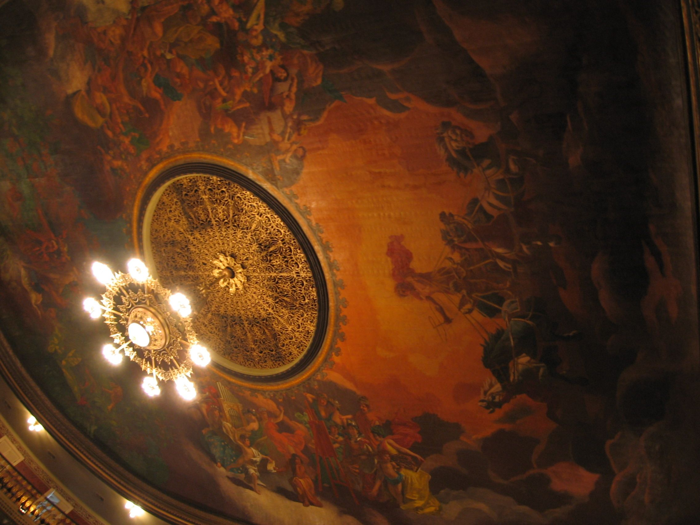

A história do Theatro da Paz, o teatro que a borracha ergueu em Belém e a Unesco fez patrimônio mundial

O primeiro teatro de ópera da Amazônia entrou para o mapa-múndi do patrimônio. Em 27 de julho de 2026, o Comitê do Patrimônio Mundial da Unesco, reunido na Coreia do Sul, aprovou a inscrição do Theatro da Paz, em Belém, e do Teatro Amazonas, em Manaus, na Lista do Patrimônio Mundial, sob a designação conjunta Teatros da Amazônia. Com a decisão, a Região Norte ganhou seu primeiro Patrimônio Mundial Cultural, e o velho teatro da Praça da República, fundado em 15 de fevereiro de 1878, chega aos 148 anos com o novo título na fachada.
A candidatura foi coordenada pelo Instituto do Patrimônio Histórico e Artístico Nacional (Iphan), em parceria com o Ministério da Cultura e o Ministério das Relações Exteriores, com a colaboração das secretarias de Cultura do Pará e do Amazonas. Os dois teatros entraram na lista como um bem seriado, categoria em que edifícios diferentes são inscritos juntos pelo que têm em comum. No caso, tudo: nasceram do mesmo dinheiro, o da borracha, e do mesmo desejo de trazer a ópera europeia para dentro da floresta. É a 26ª inscrição brasileira na lista, registra a Agência Brasil; o total, segundo o escritório da ONU no Brasil, chega a 1.273 bens em todo o mundo.
Por que Belém construiu um teatro de ópera em 1878?
A resposta curta está no látex. Na segunda metade do século XIX, a exploração da borracha transformou Belém na porta de saída da Amazônia e deu à cidade o apelido de Capital da Borracha, como lembra o site oficial do teatro. A elite local, enriquecida e vestida à moda parisiense, não tinha uma casa de espetáculos à altura do gênero lírico. O governo da província contratou então o engenheiro militar pernambucano José Tibúrcio de Magalhães, que desenhou um edifício neoclássico inspirado no Teatro alla Scala, de Milão.
Em 1869, Dom Antônio de Macedo Costa lançou a pedra fundamental e batizou o projeto de Nossa Senhora da Paz, em alusão ao fim da Guerra do Paraguai. O nome religioso caiu quando ficou claro que o prédio abrigaria apresentações mundanas, e restou a paz. As obras terminaram em 1874, mas denúncias contra os construtores levaram a um inquérito, e a casa só abriu quatro anos depois. Na noite de estreia, a companhia do pernambucano Vicente Pontes de Oliveira encenou o drama As Duas Órfãs, do francês Adolphe d'Ennery, com a orquestra do maestro Francisco Libânio Collas.
O palco onde Carlos Gomes regeu O Guarani
A ópera propriamente dita chegou em 1880, com Ernani, de Verdi, abrindo a primeira temporada lírica da casa, segundo o jornal O Imparcial. No mesmo ano entrou em cartaz O Guarani, que voltaria em 1882 regido pelo próprio Carlos Gomes, autor da ópera. As temporadas anuais seguiram sem interrupção até 1907, e pelo palco passou também a bailarina russa Anna Pavlova.
O prédio acompanhou a riqueza do período. As pinturas da sala de espetáculos, feitas entre 1887 e 1890, levam as assinaturas de Chrispim do Amaral e do italiano Domenico de Angelis, que pintou no teto a viagem do deus Apolo à Amazônia e depois decoraria o Teatro Amazonas. A engenharia também tinha suas invenções: a Agência Brasil descreve uma caixa d'água de 40 mil litros instalada sob o fosso da orquestra, que servia ao sistema de resfriamento e à acústica da sala. O conjunto rendeu ao edifício, junto ao Iphan, a classificação de teatro-monumento. Outra casa centenária cuja história o FOYER já contou é o Theatro Municipal do Rio de Janeiro.

O que a Unesco reconheceu agora?
O texto da candidatura situa os dois teatros na chamada Era de Ouro da Amazônia, o auge econômico do ciclo da borracha entre 1879 e 1912. Para a Unesco, os edifícios foram concebidos como símbolos das ambições políticas, culturais e urbanísticas de suas cidades: inspirados na arquitetura francesa e em outras referências europeias, mas enriquecidos por elementos decorativos que evocam a Amazônia. A inscrição atendeu a dois critérios da lista: o do intercâmbio de valores humanos refletido na arquitetura e nas artes, e o do exemplo notável de edifício que representa uma etapa significativa da história.
Entre a construção e o título, houve um longo vale. Com o declínio da borracha, o Theatro da Paz atravessou décadas de dificuldades, períodos de portas fechadas e restaurações insuficientes. A retomada ganhou corpo em 1996, com a criação da primeira orquestra da história da casa, a Orquestra Sinfônica do Theatro da Paz, e em 2002, quando o prédio reabriu depois de dois anos de restauração e inaugurou o Festival de Ópera do Theatro da Paz.
Como visitar o Theatro da Paz
O teatro mantém programação regular de espetáculos, com ingressos vendidos na bilheteria e no site Ticket Fácil, e abre as portas para visitas guiadas de 45 minutos, que percorrem os espaços históricos do prédio. As visitas acontecem de hora em hora, de terça a sexta das 9h às 12h e das 14h às 17h, e nos sábados e domingos das 9h às 12h. O ingresso custa R$ 10 (inteira) e R$ 5 (meia), vendido apenas na bilheteria; às quartas-feiras, as visitas espontâneas são gratuitas. Grupos com mais de seis pessoas precisam agendar por e-mail.
Perguntas rápidas
O que é o título Teatros da Amazônia? É a designação com que o Theatro da Paz (Belém) e o Teatro Amazonas (Manaus) foram inscritos juntos na Lista do Patrimônio Mundial da Unesco, em 27 de julho de 2026, como um bem seriado. É o primeiro Patrimônio Mundial Cultural da Região Norte.
Quando o Theatro da Paz foi inaugurado? Em 15 de fevereiro de 1878, com o drama As Duas Órfãs, de Adolphe d'Ennery. O projeto neoclássico do engenheiro José Tibúrcio de Magalhães se inspirou no Teatro alla Scala, de Milão.
Quem já se apresentou no Theatro da Paz? Carlos Gomes regeu sua ópera O Guarani na casa em 1882, e a bailarina russa Anna Pavlova dançou em seu palco. O Festival de Ópera do Theatro da Paz nasceu em 2002, com a reabertura do prédio restaurado.
Como visitar o Theatro da Paz? Com visitas guiadas de 45 minutos, de terça a domingo, por R$ 10 (inteira) e R$ 5 (meia), vendidas na bilheteria. Às quartas-feiras a visita é gratuita.